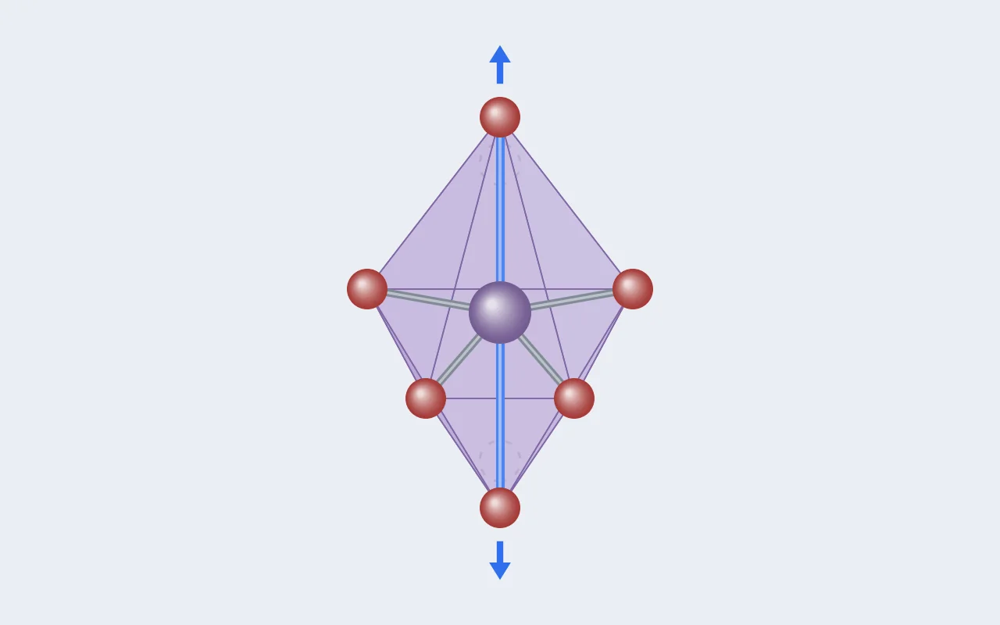

DFT 실습 [5] — 장난감을 졸업했더니 팔면체가 늘어나 있었다
실습 [1]부터 실습 [4]까지 제가 계산한 NaMnO₂는 손으로 만든 이상화 구조였습니다. 세팅을 익히기엔 완벽했지만, 연구를 하려면 진짜 구조가 필요합니다. 오늘은 재료 데이터베이스에서 실제 NaMnO₂를 꺼내 오고, 처음으로 원자와 격자가 스스로 움직이는 이완 계산을 돌렸습니다. 그리고 결과 파일 안에서, 이 시리즈 내내 이론으로만 이야기하던 현상 하나를 숫자로 만났습니다.

0. 왜 장난감을 졸업해야 했나
지금까지 쓴 구조는 "O3형 층상 NaMnO₂라면 대략 이렇겠지" 하고 격자 상수를 넣어 만든 R-3m 구조였습니다. 수렴 테스트와 범함수 비교에는 충분했습니다. 비교하는 양쪽이 같은 구조라 오차가 상쇄되니까요. 하지만 전압, 상 안정성, 산소 산화처럼 연구에서 진짜로 묻는 질문은 실제 원자 배열에서만 의미가 있습니다. 그래서 세계 최대의 계산 재료 DB인 Materials Project(MP)에서 구조를 받아 오기로 했습니다. 결론부터 말하면, 제 장난감 구조는 진짜 바닥 구조보다 원자당 약 0.1 eV 위에 떠 있는 가상 물질이었습니다.
1. 연장 준비: pymatgen과 MP API
재료과학용 파이썬 라이브러리 pymatgen과 MP 접속 클라이언트 mp-api를 클러스터에 설치했습니다. 여기서 세 번 넘어졌고, 세 번 다 배울 게 있었습니다.
-
디스크 걱정은 숫자로 판단한다. "용량이 부족하다더라"는 말에
멈칫했지만
df -h로 보니 부족한 건 홈 디렉토리가 있는 루트 디스크(95% 사용)였고, 작업용 데이터 디스크는 6 TB 넘게 비어 있었습니다. 라이브러리 전체가 1~2 GB라 걱정할 크기가 아니었습니다. 대신 pip이 몰래 루트 디스크를 쓰는 두 곳(다운로드 캐시와 임시 폴더)까지 데이터 디스크로 돌렸습니다. -
에러는 "실패했다"가 아니라 "무엇이 실패했다"까지 읽는다. 설치
후 검증에서
AttributeError가 났는데, 이건 설치가 안 된 게 아니라 버전 번호를 묻는 방법이 틀렸다는 뜻이었습니다. 설치가 안 됐다면ModuleNotFoundError가 났을 겁니다. 두 에러는 진단이 완전히 다릅니다. -
진짜 문제는 파이썬 버전이었다. MP 연결 테스트에서
ImportError가 났습니다. 시스템 기본 파이썬이 3.9라서 pip이 pymatgen을 구버전으로 깔 수밖에 없었고, mp-api는 최신 pymatgen에만 있는 부품을 찾고 있었던 겁니다. 클러스터에 3.11이 숨어 있는 걸 찾아 가상환경(venv)을 부수고 다시 지었더니 해결됐습니다. 격리된 venv를 쓰는 이유를 첫날에 체험한 셈입니다. 부수고 다시 짓는 데 5분이면 됩니다.
export TMPDIR=<데이터디스크>/tmp # 임시 파일도 데이터 디스크로
python3.11 -m venv <데이터디스크>/venv
source <데이터디스크>/venv/bin/activate
pip install pymatgen mp-api --no-cache-dir # 캐시를 남기지 않음
덤으로 하나 더. 도중에 화면에 찍힌 출력을 통째로 복사해 터미널에 다시
붙여넣는 실수를 했습니다. 터미널은 붙여넣은 모든 줄을 명령으로 실행하려 들어서
에러가 우르르 쏟아졌고, 닫히지 않은 따옴표 때문에 프롬프트가 >로
바뀌어 멈췄습니다. Ctrl+C로 탈출했습니다. 규칙: 터미널에서
채팅으로 복사는 자유, 출력을 터미널로 붙여넣기는 금지. API 키는 홈의 설정
파일에만 넣고 권한을 잠갔습니다(chmod 600). 채팅에도, 스크립트에도,
저장소에도 올리지 않습니다.
2. DB에 묻기: NaMnO₂는 몇 가지 모양으로 존재하나
연결되자마자 첫 질문을 던졌습니다. "NaMnO₂ 조성으로 등록된 구조를 전부 보여줘."
with MPRester() as m:
docs = m.materials.summary.search(
formula="NaMnO2",
fields=["material_id", "symmetry", "energy_above_hull", "nsites"])답은 11개였습니다. 같은 원소, 같은 비율인데 원자 배열이 다른 다형체들이 에너지 순으로 줄을 섭니다. 세로축의 E_hull은 "열역학적 바닥에서 원자당 몇 meV 떠 있나"이고, 0이 승자입니다.
3. 복선 회수: 왜 예쁜 R-3m이 아니라 비뚤어진 C2/m인가
바닥 구조의 격자는 a = 5.67, b = 2.86, c = 5.76 Å에 β = 113.3°입니다. 직각이 아니라 비스듬한 상자예요. 범인은 이 시리즈의 주인공 Mn³⁺입니다. 이론 [2]의 전자 배치 그림에서 고스핀 d⁴는 위쪽 e_g 두 칸에 전자가 하나만 들어가 있었습니다. 에너지가 같은 두 칸에 전자가 하나뿐인 상태는 불안정해서, 결정은 MnO₆ 팔면체를 한 방향으로 잡아 늘여 두 칸의 에너지를 갈라놓습니다. 얀-텔러 효과입니다. 모든 Mn이 같은 방향으로 늘어나면 격자 전체가 비뚤어지고, 그 결과가 C2/m입니다. 그렇다면 이 구조를 이완 계산했을 때 Mn–O 결합 길이가 제각각 갈라져 있어야 합니다. 이게 오늘 계산의 가설이 됐습니다.
4. 첫 이완 계산 설계: 바깥 루프를 켜다
지금까지는 원자를 고정하고 전자 문제만 풀었습니다(NSW = 0). 이번에는
처음으로 바깥 루프를 켭니다. 원자에 걸리는 힘을 계산하고, 힘을 따라 원자와 격자를
옮기고, 다시 전자 문제를 풀기를 힘이 사라질 때까지 반복합니다. INCAR에 새로 등장한
줄들:
EDIFF = 1E-6 ! 힘을 계산하므로 전자 수렴을 한 자릿수 조임
MAGMOM = 2*0.0 2*4.0 4*0.0 ! 새 셀의 원자 순서(Na2 Mn2 O4)
NSW = 100 ! 이온 스텝 최대 100회
IBRION = 2 ! 공액구배법으로 원자 이동
ISIF = 3 ! 원자 위치 + 격자 모양 + 부피까지 전부 이완
EDIFFG = -0.02 ! 음수 = 힘 기준. 모든 힘 < 0.02 eV/Å면 종료
ISIF = 3을 켠 이유는 얀-텔러 왜곡이 격자 모양 자체를 바꾸는
현상이기 때문입니다. 상자를 고정하면 그 물리를 볼 수 없습니다. U는 실습 [4]와 같은
3.9 eV를 그대로 걸었습니다.
그리고 k-mesh에서 교훈 하나. 실습 [3]에서 "6×6×2 동결"을 선언했지만, 그건 옛 셀(a = 2.95, c = 15.8 Å)의 맞춤복이었습니다. 새 셀은 축 길이가 전혀 다르니 같은 규칙(축 길이 × k점 수 ≈ 20~30 Å)을 다시 적용하면 5.67×4, 2.86×8, 5.76×4가 모두 약 23으로 맞는 4×8×4가 됩니다. 동결한 것은 숫자가 아니라 기준이었습니다.
5. 1차 이완: 9스텝, 그리고 부피 +5.9%
계산은 9번의 이온 스텝 끝에 reached required accuracy를 찍고
멈췄습니다. 스텝 한도가 아니라 힘 기준을 통과해서 끝났다는 뜻입니다. 매 스텝
자기모멘트는 8.0000(Mn 2개 × 4 μB)을 유지했고, 원자와 격자가
움직이는 동안에도 Mn³⁺ 고스핀이 무너지지 않았습니다. 그리고 F와 E0가 소수점 끝까지
같았습니다. 스미어링이 에너지에 아무것도 보태지 않았다는 건 페르미 준위 근처에 걸친
상태가 없다는 뜻, 즉 밴드갭이 확실히 열린 절연체라는 판정이 로그 한 줄에서 공짜로
나온 겁니다.
| a (Å) | b (Å) | c (Å) | β (°) | 부피 (ų) | |
|---|---|---|---|---|---|
| MP 입력 | 5.667 | 2.865 | 5.759 | 113.33 | 85.87 |
| 내 이완 결과 | 5.762 | 2.925 | 5.867 | 113.12 | 90.94 |
| 변화 | +1.7% | +2.1% | +1.9% | −0.2° | +5.9% |
β가 113°를 지켰으니 단사정 왜곡은 우리 계산에서도 안정합니다. 대신 세 축이 고르게 약 2%씩 늘었습니다. 무작위 오차가 아니라 계통적인 팽창이고, PBE 계열 범함수가 격자를 1~2% 크게 잡는 알려진 경향과 맞습니다. MP가 요약 문서에 싣는 구조가 다른 범함수로 이완된 것일 가능성도 있어서, 이건 확정이 아니라 가설로 남겨두고 다음 범함수 비교 때 같이 검증하기로 했습니다.
6. 2차 이완: 왜 한 번 더 돌리나
부피가 6% 변했다면 이완을 한 번 더 해야 합니다. VASP는 계산을 시작할 때의 부피에 맞춰 평면파 기저 세트를 만들고 끝까지 그대로 씁니다. 셀이 커지면 그 기저가 새 부피에 비해 성겨지고, 응력이 인위적으로 틀어집니다(Pulay stress). 그래서 1차의 최종 구조(CONTCAR)를 새 출발점으로 삼아 다시 돌리는 게 정석이고, MP도 모든 구조를 이렇게 두 번 이완합니다.
2차 이완은 1스텝 만에 끝났고 부피는 90.94 ų 그대로였습니다. 새 기저로 다시 계산해도 힘과 응력이 이미 기준 안이었다는 뜻이니 수렴 확정입니다. 재밌는 건 구조가 그대로인데 에너지만 셀당 6.9 meV(원자당 약 0.9 meV) 내려갔다는 점입니다. 1차 계산이 처음 부피용 기저로 커진 셀을 계산하던 만큼의 차이이고, 2차 이완을 한 이유가 정확히 이 숫자입니다.
참고로 준비 명령(폴더 복사, CONTCAR를 POSCAR로)만 치고 "이게 제출인가?" 하고
멈칫했습니다. 아닙니다. 폴더를 만들고 파일을 고치는 건 전부 책상 위 작업이고,
클러스터 자원을 실제로 쓰는 순간은 qsub 한 줄뿐입니다. 그래서
검문소는 항상 qsub 바로 앞에 둡니다.
7. 하이라이트: 얀-텔러의 지문
이제 §3의 가설을 확인할 차례입니다. 이완된 구조에서 Mn마다 주변 산소 6개와의 거리를 pymatgen으로 재는 10줄짜리 스크립트를 짰습니다.
s = Structure.from_file("CONTCAR")
for i, site in enumerate(s):
if site.specie.symbol != "Mn":
continue
nb = sorted(n.nn_distance for n in s.get_neighbors(site, 2.6)
if n.specie.symbol == "O")
print(f"Mn#{i}: " + " ".join(f"{d:.3f}" for d in nb))Mn#2: 1.970 1.970 1.970 1.970 2.436 2.436
Mn#3: 1.970 1.970 1.970 1.970 2.436 2.4364개 짧고 2개 긴, 교과서 그림 그대로입니다. 차이가 0.47 Å, 긴 결합이 짧은 결합보다 24% 길어서 미세한 떨림이 아니라 팔면체 모양 자체가 바뀐 수준입니다. e_g 칸에 들어간 전자 하나가 위아래 산소 쪽을 향하니 그 방향의 반발이 커져 두 결합만 늘어난 거죠. 그리고 두 Mn의 패턴이 완전히 같습니다. 팔면체들이 줄을 맞춰 같은 방향으로 늘어나 있다는 뜻이고, 이게 격자 전체의 단사정 왜곡을 만든 협동 얀-텔러입니다.
오늘 만난 세 숫자를 나란히 놓으면 이렇습니다. 자기모멘트 8.0000, 격자 각 β = 113.1°, 결합 길이 4短 2長. 서로 다른 출력 파일의 다른 줄에서 나온 숫자인데, 전부 같은 한 가지 물리에서 나온 겁니다. Mn³⁺ d⁴의 e_g 칸에 전자가 하나라는 사실.
실험 α-NaMnO₂의 Mn–O 거리는 대략 1.93~1.94 Å와 2.39~2.41 Å 수준으로 알려져 있습니다. 제 계산은 두 결합 모두 1.5~2% 길게 나왔는데, §5에서 본 축별 약 2% 팽창과 같은 경향입니다. 왜곡의 패턴과 비율은 정확히 잡았고, 절대 길이만 범함수 특유의 팽창을 달고 있다는 판독입니다.
연구와의 연결
이 왜곡을 숫자 하나로 요약하면(결합 길이가 평균에서 벌어진 정도의 제곱 평균, 흔히 distortion index라고 부릅니다) 여기서는 약 1.1×10⁻²입니다. 제 본 연구의 대상인 고엔트로피 조성에서는 Mn³⁺ 옆에 Ni, Fe, Ti 같은 이웃이 섞이면서 이 왜곡이 자리마다 다르게, 때로는 약하게 나타날 겁니다. 자리별 왜곡 지수는 해석 가능한 특징의 유력한 후보이고, 오늘 짠 10줄짜리 스크립트가 나중에 수백 개 구조에 돌아갈 특징 추출기의 원형입니다.
이날 배운 것들
- 장난감 구조는 세팅 연습용이다. 이상화 R-3m은 바닥보다 원자당 96.6 meV 위의 가상 물질이었다. 연구의 질문은 진짜 원자 배열에서만 의미가 있다.
- 에러 메시지는 진단서다. ModuleNotFoundError, AttributeError, ImportError는 각각 설치 안 됨, 이름 없음, 부품 궁합 문제로 전혀 다른 이야기를 한다. 이번 병목은 파이썬 버전이었다.
- 동결한 것은 기준이지 숫자가 아니다. 셀이 바뀌면 k-mesh는 같은 규칙으로 다시 잰다. 이번 셀은 4×8×4.
- 부피가 크게 변하면 두 번 이완한다. 기저 세트가 처음 부피에 묶여 있기 때문이고, 그 차이는 이번에 셀당 6.9 meV였다.
- F = E0는 절연체의 증거다. 스미어링이 한 일이 없다는 건 갭이 열려 있다는 뜻이다.
- 물리는 여러 출력에 흩어져 있다. 자기모멘트, 격자 각, 결합 길이가 같은 한 가지 원인을 서로 다른 언어로 말하고 있었다.
다음. 드디어 첫 물성 예측, 전압 계산입니다. 이 구조에서 Na를 하나 빼고(충전을 흉내), V = [E(Na 빠진 구조) + E(Na 금속) − E(원래 구조)] / e로 전압을 뽑습니다. 이론 [2]에서 던져놓은 퀴즈, Na를 빼면 Mn 하나가 4+로 승격되니 자기모멘트가 어떻게 변해야 하는가도 그때 실측으로 확인합니다. 사실상 연구 0호 데이터입니다.

Seok
연구하면서 개발합니다. 배터리 재료를 원자 단위에서 계산하는 법을 바닥부터 배우는 중입니다. → 글 더 보기